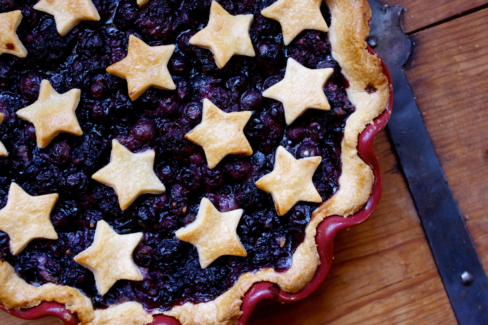

Blueberry Pie Recipe

Ingredients
- 3/4 cup white sugar
- 3 tablespoons cornstarch
- 1/4 teaspoon salt
- 1/2 teaspoon ground cinnamon
- 4 cups fresh blueberries
- 1 recipe pastry for a 9 inch double crust pie
- 1 tablespoon butter
Directions
- Preheat oven to 425 degrees F (220 degrees C).
- Mix sugar, cornstarch, salt, and cinnamon, and sprinkle over blueberries.
- Line pie dish with one pie crust. Pour berry mixture into the crust, and dot with butter. Cut remaining pastry into 1/2 - 3/4 inch wide strips, and make lattice top. Crimp and flute edges.
- Bake pie on lower shelf of oven for about 50 minutes, or until crust is golden brown.
Recipe via All Recipes.